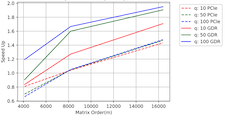
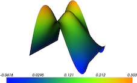

|
Research
I'm interested in Genome Graphs, Specifically scaling Sequence to Graph alignmnet on massively parallel machines.
|
|
|

|
NIT Raipur
2016-2020 |
IISc
2020-present |
|
Publications
|
|  |
mutiNode:multiGPU implementation of Gram method for out‐of‐core data access in Randomized SVD algorithms.
Scaled Gram method for out of core data access over multiple nodes and multiple GPU’s exploiting the core features of GPU's SIMD Architecture
such as asynchronous memory copy between host to device and
shared memory utilisation for single GPU computation.Tested Gram method for SVD computation on 4 V100 GPU across 2 NUMA Nodes. Project Report[Link]
|
|  |
FEniCS on GPU
FEniCS on GPU takes advantage of CUDA cores to solve the SPARSE matrix using cuPy and SciPy libraries.
Solved Poisson Equation on NVIDIA Tesla K80 GPU with 0.36 Million Grid Points in just 65.995923 seconds.
Link[GitHub]
|
 |
UG Research Intern
LAMFiP IISc.
I worked on Transient Poisson's Equations(3D) with moving heat source,
and used FEniCS for Finite Element modeling with unstructred mesh on parallel cores (OpenMP),PETSc. was used for Linear Algebra backend with hypre_amg as precoditioner and GMRES krylov solver.
|
|